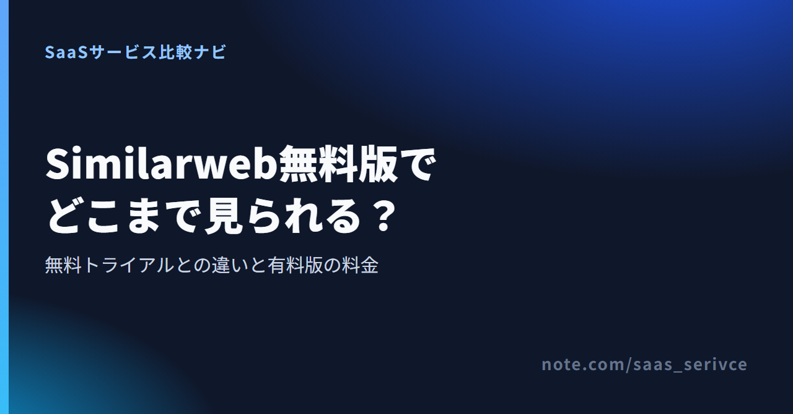
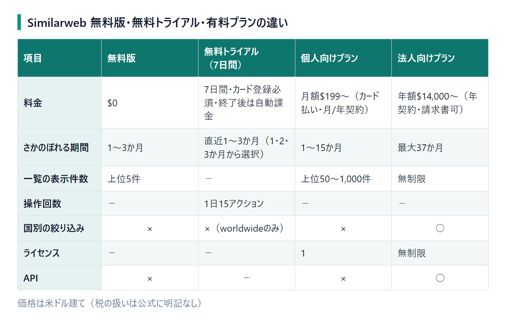

Similarweb無料版でどこまで見られる？無料トライアルとの違いと有料版の料金
Similarweb（シミラーウェブ）は、市場・競合分析ツールです。競合サイトの訪問数や流入経路を調べるときに使います。無料版と7日間のトライアルでは、利用期間と自動課金の条件が異なります。
この記事では、無料で見られる範囲を中心に紹介します。有料プランの料金、解約方法、日本語対応と支払い方法も分かります。
Similarwebの料金は無料版・トライアル・有料版の4区分
- 無料版：無料／期限なし
- 無料トライアル：無料／7日間
- 個人向け：月額$199〜／1人分
- 法人向け：年額$14,000〜／人数無制限
個人向けでは、主に過去データの期間が延び、一覧の表示件数も増えます。国別フィルタを使えるのは法人向けだけです。
公式サイトから、無料版の登録画面や有料プランの申し込み窓口へ進めます。法人向けの問い合わせ窓口もあります。
Similarweb無料版で見られる範囲（期間・表示件数・国別フィルタ）
無料アカウントに使用期限はありませんが、過去データの期間と一覧の件数には上限があります。国ごとの絞り込みも対象外です。

公式サイトは日本語表示で、ドメイン入力欄と「始める」ボタンが見えます。

- 検索回数：無料アカウントでの上限は公表されていない。ログインせずにサイトを調べられる公式の無料チェッカーは、1日3回まで
- さかのぼれる期間：過去1〜3か月分まで（個人向けプランは最大15か月、法人向けプランは最大37か月）
- 一覧の表示：上位5件まで（個人向けプランは上位50〜1,000件、法人向けプランは無制限）
- 国別の絞り込み：できない。国を指定して数字を分ける機能（国別フィルタ）がない
無料版の1〜3か月分でも、競合の直近の規模はつかめます。ただし、季節によって集客が動く業種では前年同月と比べられず、年末商戦や年度替わりの伸びが例年並みか判断しにくくなります。
主要な流入元やキーワードを見るだけなら、上位5件でも大きな支障はありませんが、6位より先まで追う場合は有料版が必要です。海外からの訪問が多いサイトでは、日本のアクセスだけを取り出せない点にも注意が要ります。
使い方は簡単です。公式サイトで無料アカウントを作り、調べたいサイトのドメインを検索窓に入れます。あとは気になる競合を1つずつ検索し、数字を見比べるだけ。画面ごとの見方は、別のnoteで順を追って説明します。
無料版の登録と、7日間のトライアルの入口を見分けられます。トライアルではカード登録を求められます。
無料版と無料トライアル（7日間）は別物
無料トライアルは、7日間が終わる前に解約しないと、そのまま有料プランの課金が始まります。 無料版とは申し込み条件が異なり、トライアル終了後の扱いも違います。
- 申し込みの条件：無料版は無料アカウントを作って使う。トライアルはクレジットカードの登録が必須で、登録時に$1のカード認証がある
- 使える期間：無料版は使用期限の定めがない。トライアルは7日間
- 使える量：トライアルは1日15アクションまで
- 見られる範囲：無料版と同じく、さかのぼれるのは直近3か月までで、国別には絞れない。サイトのアクセスを調べるときは、直近1・2・3か月から期間を選ぶ
カードを登録する前に、トライアル後の移行先と請求額を申し込み画面で確かめてください。
トライアルでは前年同月との比較ができず、日本からのアクセスだけに絞った数字も対象外です。契約前に見分けたいのは、個人向けと法人向けのどちらが必要かという点。止め方は、このあとの解約の項で説明します。
Chrome拡張でできること（アカウント登録なしで使える範囲）
Chrome拡張を使うと、ブラウザで開いているサイトのアクセス状況をその場で調べられます。インストールも利用も無料。アカウント登録も不要です。
- 入れ方：Chromeウェブストアで、提供元がSimilarwebになっている拡張機能を追加する。名前で探すと非公式の配布サイトも出てくるので、そこからは入れない
- 見られる項目：訪問数の推移、グローバル・国別・カテゴリ別のランキング
- ほかに見られる項目：流入チャネル、地域別のトラフィック、AIチャットボット経由の訪問の内訳
- 使いどころ：競合や取引先のサイトを開いたまま、アクセスの規模と集客経路の当たりをつける。詳しく比べたいサイトだけ、無料版で一覧を見比べる
地域別のトラフィックで分かるのは、訪問が多い国や地域の内訳です。日本からの訪問だけに数字を絞る国別フィルタとは異なります。この内訳を見れば、法人向けの国別フィルタまで必要か判断できます。
拡張機能の見え方や本体との使い分けは、Webサイトで公開する総合レビューで詳しく扱います。
有料プランの料金：個人向け・法人向けの目安
有料版の価格は、個人向けが月額$199から、法人向けが年額$14,000から。1ドル=157円で換算すると、個人向けは約3万1,000円、法人向けは約220万円になります。執筆時点の目安であり、為替によって変わります。
公式の料金ページには、プランごとの金額が載っていません。ここで挙げたのは、公式の日本語ブログが示す最低価格です。
個人向けプラン（セルフサーブ）の料金
個人向けは、申し込みから支払いまで公式サイトで完結する「セルフサーブ」型のプランです。料金は月額$199から。月払いと年払いを選べますが、支払いはクレジットカードに限られます。
契約できるのは1ライセンス、つまり1人分だけ。過去データは最大15か月までさかのぼれ、一覧も上位5件より先まで見られます。国別の絞り込みとAPIによるデータ連携は対象外。サポートも英語のメールとチャットのみです。
$199は最も安い入口の価格です。公式サイトのSemrushとの比較ページには、マーケティング向けの機能一式を月額$399で使えるとあります。必要な機能によっては約2倍。年払いの金額は公開されていません。
前年同月と比べたいなら、選ぶプランで12か月以上さかのぼれるか、申し込む前に確かめておいてください。
月払いなら、競合調査が必要な月だけ契約し、更新日の14日前までに解約する方法もあります。手続き後も契約期間の終わりまでは利用可能です。
法人向けプラン（年契約）の料金
法人向けは年額$14,000からの年契約のみ。金額は営業との個別見積もりで決まります。支払いは請求書とクレジットカードから選べ、ライセンス数（使える人数）に上限はありません。
個人向けとの違いは、人数と支払い方だけではありません。過去データは最大37か月まで。国別の絞り込みを使えば、日本からのアクセスだけを見ることも可能です。外部のBIツールなどへAPIでデータを連携する機能も、法人向けに含まれます。
月あたりに直すと約$1,167で、個人向けの最低価格のおよそ6倍。複数の担当者で市場や競合を継続して追う会社向けの価格帯です。1人で使う場合は、まず個人向けを検討し、会社のカードで払えるか経理へ相談してみてください。
個人向けの申し込みと、法人向けの見積もり依頼ができます。法人で使う場合は、必要な期間・国・人数を決めておくと、見積もりを頼みやすくなります。
日本語対応・日本法人・支払いとインボイスの扱い
画面は日本語で使え、東京には日本法人もあります。ただし、サポートの言語と支払い方法は、個人向けと法人向けで異なります。
- 画面の言語：ログイン後にSettings→Account→Languageと進むと、英語・中国語・フランス語・日本語から選べる。ヘルプセンターにも日本語の記事がある
- 日本法人：SimilarWeb Japan株式会社が東京・大手町にある
- サポート：法人向けは専任のアカウントマネージャーとアナリストが付き、日本語でトレーニングやサポートを受けられる。個人向けは英語のメールとチャットのみ
- 支払い方法：個人向けはクレジットカード払いだけで、JCBなど使えるブランドは明記されていない。請求書払いは法人向けプランのみで、法人向けはカード払いも選べる
- インボイスと領収書：日本のインボイス登録番号が請求書に載るか、領収書をダウンロードできるかは、公開情報からは分からない
カードで払うと、USDの請求額が円に換算されて引き落とされます。カード会社によっては海外利用の手数料が加わることも。海外サービスの利用料は、消費税やインボイスの扱いが国内サービスと異なる場合があります。経費処理の方法は税理士に確認してください。
画面を日本語に切り替える細かな手順や、日本語で使える範囲は、別のnoteにまとめます。
解約・トライアルの自動課金を止める手順
解約は、ログイン後の設定画面から次の順に進みます。項目名は、英語表示のときのものです。
- ログインして、画面の設定アイコンを開く
- 「Account」から「Subscription Information」に進む
- 「Cancel Plan」を選んで解約する
設定画面のほか、support@similarweb.com へのメールでも解約を申し出られます。無料トライアルは、7日間が終わる前に解約すれば課金なし。有料プランの解約期限と返金条件は次のとおりです。
- 解約の期限：利用規約で、月次契約は更新日の14日前まで、年次契約は更新日の30日前までに通知すると決められている
- 解約したあと：契約期間の終わりまでは使え、その後に自動で終了する
- 返金：支払い済みの料金は返金しないと、利用規約に明記されている。年払いの途中で解約しても、残りの期間の分は戻らない
トライアルに登録したら、その日のうちに終了日と解約方法を確かめ、前日までに手続きを済ませましょう。年払いは返金がないため、1年使い続ける見込みが立ってから選ぶのが無難です。
無料で代替できるツールとの使い分け
競合の直近の規模と集客の経路を把握するだけなら、Similarwebの無料版と拡張機能で足ります。自社サイトの正確な数字を見るなら、Similarweb以外のツール。検索順位や被リンクまで調べたい場合も同じです。
- 無料版で足りる例：取引先候補や新しく参入する市場の主要サイトの規模を調べる。競合がどの経路で集客しているかをつかむといった、単発の下調べ
- Googleの無料ツール：自社サイトの正確な訪問数はGoogleアナリティクスで見る。検索結果での表示回数やクリック数はSearch Consoleで見る。競合との関心の差をざっくり比べるなら、社名や商品名をGoogleトレンドに入れる方法もある
- SEOから競合を見る場合：無料の代替というより、SEO分析を主軸にした別系統のツールを使う。比較の相手はSemrushやAhrefs
表示される数字は推計値。自社サイトをSimilarwebで調べ、Googleアナリティクスの実数と比べてみましょう。その差が分かれば、競合の数字を読むときに、どの程度の誤差を見込めばよいか判断できます。
まとめ
無料版と拡張機能でつかめるのは、競合サイトの直近の規模感と集客経路まで。前年同月との比較や6位より先の一覧が必要なら、選択肢は月額$199からの個人向けプランです。個人向けで見られる過去データは最大15か月分で、一覧は上位5件より先まで。国別の絞り込みは個人向けでも使えません。日本からのアクセスだけを見たい場合は、年額$14,000からの法人向けプランが対象です。
費用面では、無料トライアルが7日間で自動課金に切り替わり、有料プランの支払い済みの料金は返金されません。この2点を押さえれば、請求が発生してから慌てる事態を避けられます。
まずは、調べたい競合を無料版に入れてみてください。1〜3か月分と上位5件の範囲で、必要な判断ができるかを見極めましょう。
無料版を開き、1〜3か月分と上位5件で足りるかを試せます。足りないのが期間と件数だけなら個人向け、国別分析まで必要なら法人向けが目安です。